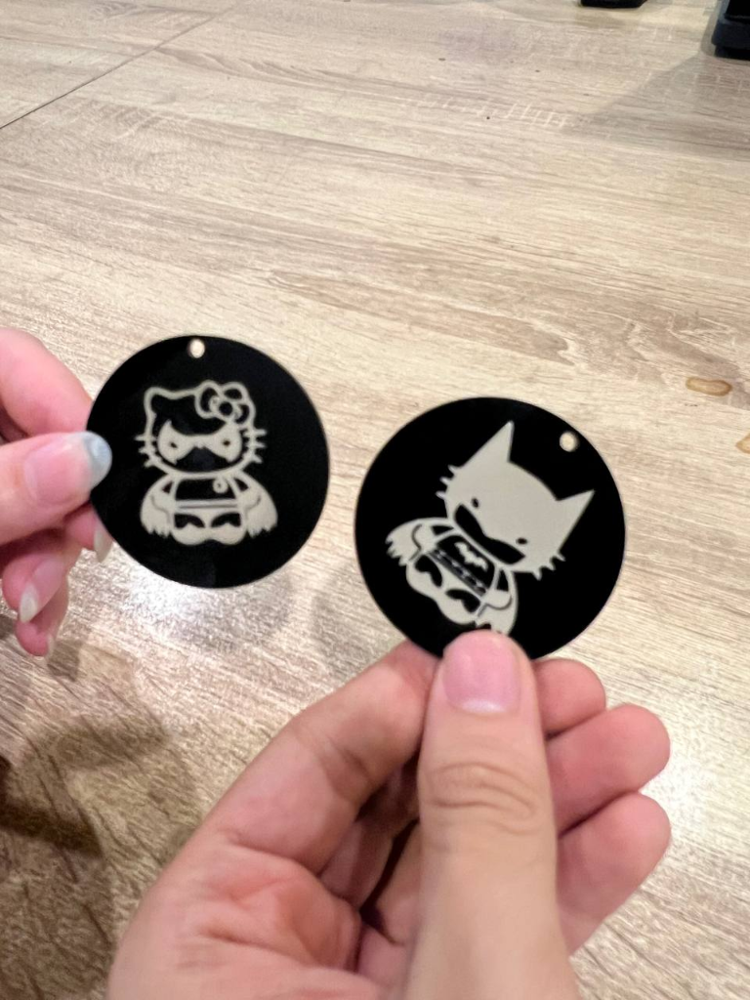
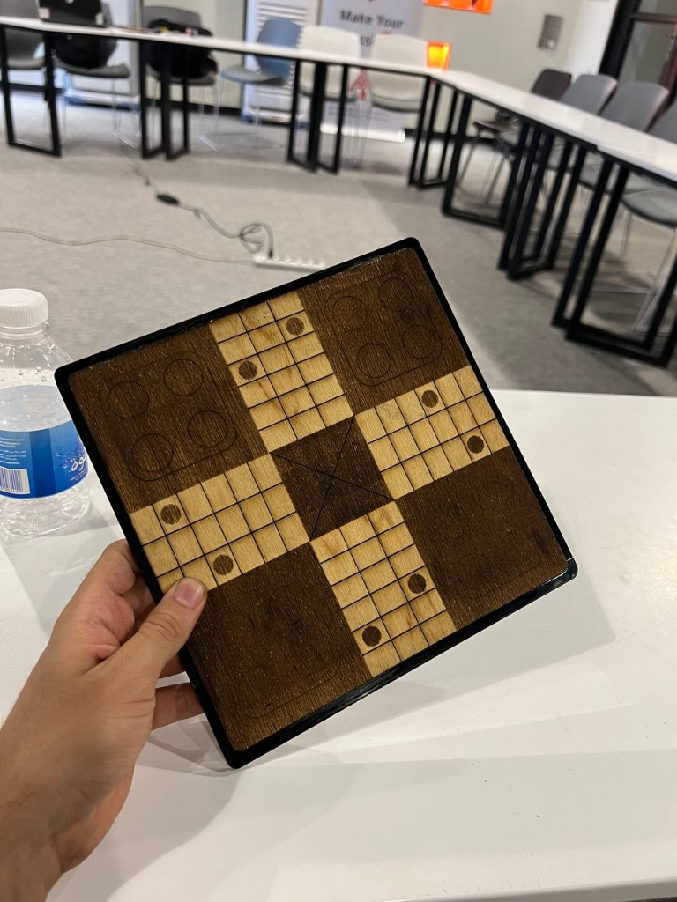
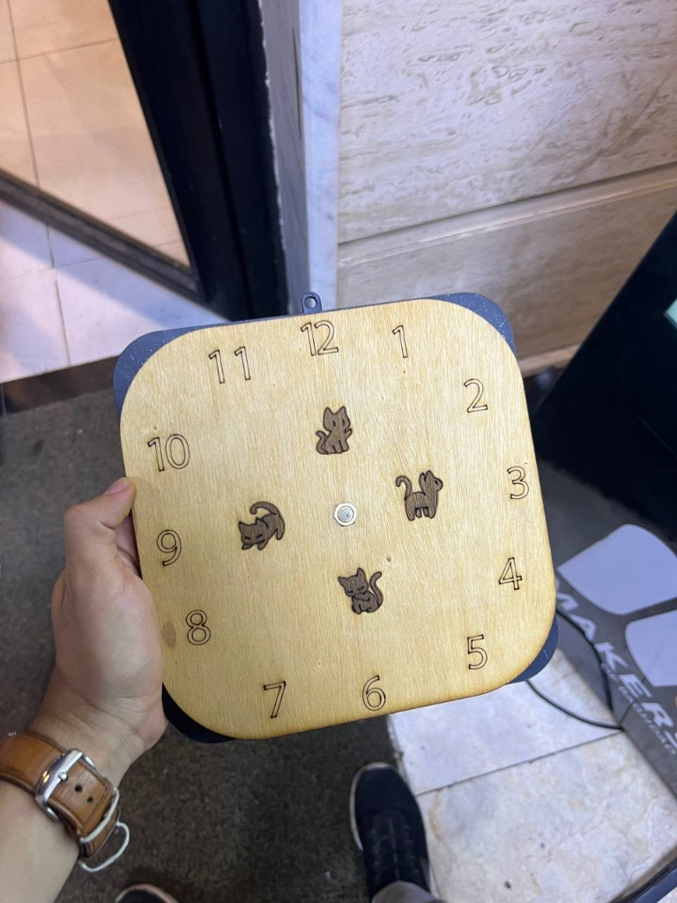
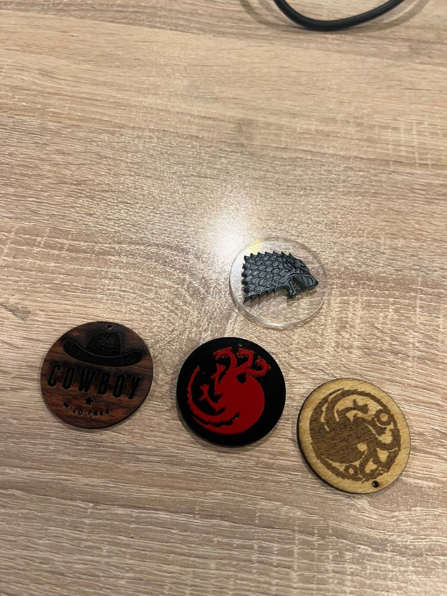
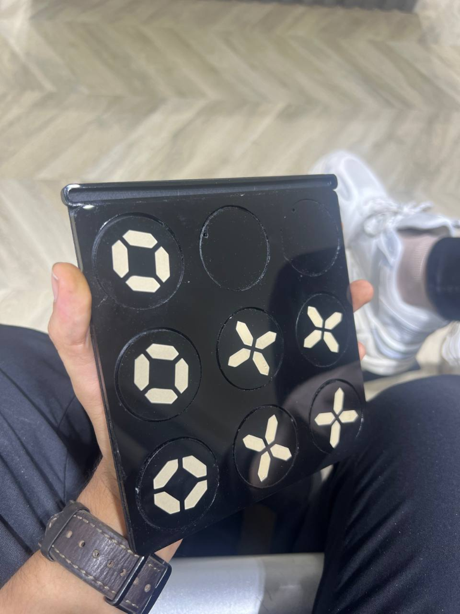

The Process
A complete CAD-to-cut workflow: designs modeled in Fusion 360, DXF profiles exported, toolpaths generated and simulated in LightBurn before touching material, then cut on a CO₂ laser. The focus was kerf compensation — accounting for the material removed during cutting so parts fit together as designed, not as-cut.
Workflow
Kerf-compensated DXF profiles
Fusion 360 profiles were offset by half the measured kerf width before export so that tabs, slots, and press-fit joints land on nominal dimensions after cutting — not the design dimensions minus the material the laser removed.
LightBurn simulation before cut
Every job was simulated in LightBurn to verify cut order and travel moves. Cutting inner geometry before outer profiles prevents parts from shifting mid-cut when the outer contour releases them from the sheet.
Materials: acrylic and wood
Power/speed profiles were calibrated per-material with test cuts before running full jobs. Acrylic required lower speed and higher air-assist pressure than wood to avoid melted edges and char buildup.
Gallery




